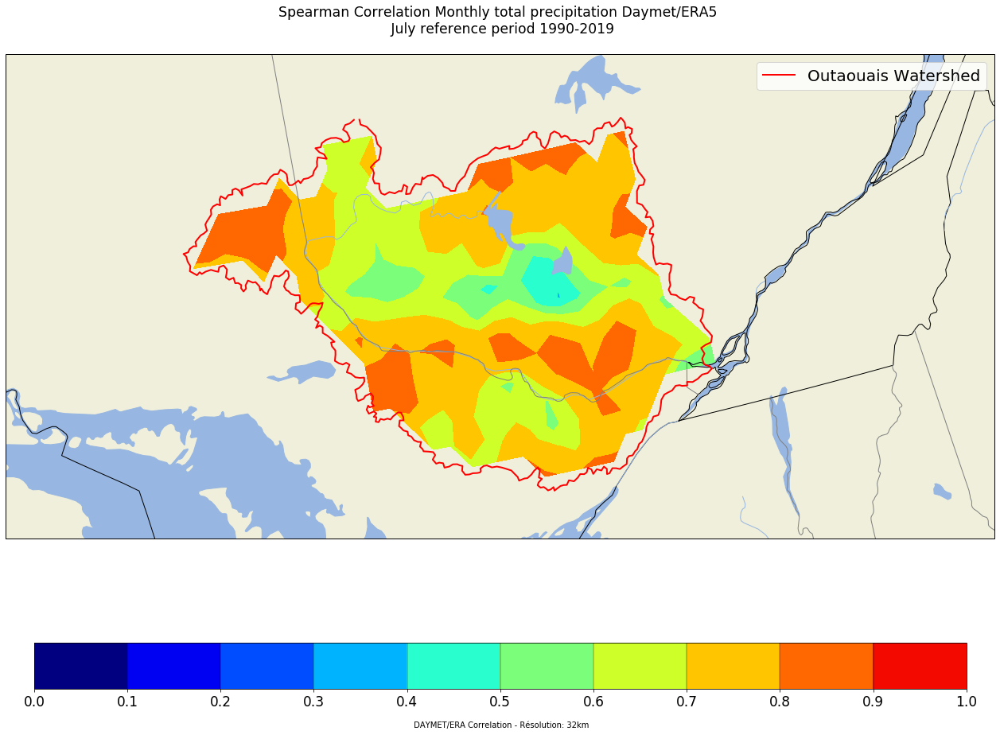

Spearman correlation between two Netcdf datasets

Netcdf: Interpolation between grids using cKDTree from Scipy library and correlation
In this post, we will interpolate a nectcdf file to another netcdf grid and then calculate timeseries spearman correlation between two datasets on same resolution grid.
To interpolate, we will follow this post
In this example, we will interpolate Daymet-1km dataset on ERA5-grid.
We will compute monthly total precipipitation and then compare the two datasets using spearman correlation.
The Daymet dataset provides gridded estimates of daily weather parameters. Seven surface weather parameters are available at a daily time step, 1 km x 1 km spatial resolution, with a North American spatial extent.
ERA5 Reanalyses provide a numerical description, with horizontal resolution of 31 km, of the recent climate (1979-present) by combining models with observations.
1- Let's import Python librairies
import warnings; warnings.filterwarnings(action='ignore')
%matplotlib inline
#for Netcdf manipulation
import xarray as xr
from netCDF4 import Dataset
import netCDF4 as nc
#for array manipulation
import numpy as np
import pandas as pd
#for plotting
import cartopy.crs as ccrs
import cartopy.feature as cfeature
import matplotlib.pylab as plt
#for interpolation
from scipy.spatial import cKDTree
We will only work over july month from 1980 to 2019:
2 - Interpolation : Daymet-1km to Daymet-32km (ERA5 grid)
We are going to use daily precipitation of Daymet-1km for july. In this analysis, we will use a subset of Daymet-1km and ERA5-32km. Indeed, we will only work over a specific watershed in Canada: Outaouais river's watershed:

Here's the script to interpolate:
path_source = 'K:/PROJETS/PROJET_OUTAOUAIS/Daily/prcp/' # path with daily precipitation
import gc
gc.collect()
variable = 'Prcp'
yi = 1980
yf = 2019
# Load target grid to interpolate
target = xr.open_dataset('Outaouais_ERA5_Grid.nc')
lat_target=target.latitude
lon_target=target.longitude
lat_target.shape
lon_target2d, lat_target2d = np.meshgrid(lon_target, lat_target)
# Load source file to create cKDTree
source = xr.open_dataset(path_source + 'Daymet_v3_prcp_1980_OUTAOUAIS.nc')
lat_source = source.variables['lat'][:]
lon_source = source.variables['lon'][:]
# function to convert latlon to xy coordinate system
def lon_lat_to_cartesian(lon, lat):
# WGS 84 reference coordinate system parameters
A = 6378.137 # major axis [km]
E2 = 6.69437999014e-3 # eccentricity squared
lon_rad = np.radians(lon)
lat_rad = np.radians(lat)
# convert to cartesian coordinates
r_n = A / (np.sqrt(1 - E2 * (np.sin(lat_rad) ** 2)))
x = r_n * np.cos(lat_rad) * np.cos(lon_rad)
y = r_n * np.cos(lat_rad) * np.sin(lon_rad)
z = r_n * (1 - E2) * np.sin(lat_rad)
return x,y,z
xs, ys, zs = lon_lat_to_cartesian(lon_source.values.flatten(), lat_source.values.flatten())
xt, yt, zt = lon_lat_to_cartesian(lon_target2d.flatten(), lat_target2d.flatten())
tree = cKDTree(np.column_stack((xs, ys, zs)))
d, inds = tree.query(np.column_stack((xt, yt, zt)), k = 10)
# let's define a function to interpolate
def interpolate(source, target, d, inds):
nt = source["time"].shape[0]
tmp = []
for t in range(0, nt):
w = 1.0 / d**2
air_idw = np.sum(w * source.prcp[t].values.flatten()[inds], axis=1) / np.sum(w, axis=1)
air_idw.shape = target.shape
tmp.append(air_idw)
return tmp
# we will make a loop over years and save netcdf files by month
for year in range(yi,yf+1):
source = xr.open_dataset(path_source + 'Daymet_v3_prcp_'+str(year)+'_OUTAOUAIS.nc')
air_idw = interpolate(source,lon_target2d, d, inds)
data_set = xr.Dataset( coords={'lon': ([ 'lon'], lon_target),
'lat': (['lat',], lat_target),
'time': source.time.values})
data_set["prcp"] = (['time','lat', 'lon'], air_idw)
[data_set.sel(time=str(year)+'-'+'{:02d}'.format(i)).to_netcdf(path_source + 'Daymet_v3_' + variable + '_'+str(year)+'_'+'{:02d}'.format(i)+'_OUTAOUAIS_ERA5grid.nc') for i in range(1,13)]
3 - Compute monthly indices
We can now open daily files to compute monthly indices.
yi = 1990
yf = 2019
#########################################################
tmin_in = './Daily/prcp/'
monthly_out = './Month_Indice/'
# Compute monthly indices
for year in range(yi,yf+1): # loop over years
for i in range(7,8): # we just want to work over july (i_month = 7)
data_pcp = tmin_in + 'Daymet_v3_Prcp_' + str(year) +'_{:02d}'.format(i) +'_OUTAOUAIS_ERA5grid.nc'
ds_pcp = xr.open_mfdataset(data_pcp)
monthly_pcp = ds_pcp.sum('time') # sum over days to calculate monthly accumulation
# we can save our netcdf files
monthly_pcp.to_netcdf(monthly_out + 'Daymet_v3_Monthly_PrecTOT_'+str(year) +'{:02d}'.format(i)+'_OUTAOUAIS_ERA5grid.nc', format='NETCDF4')
4 - Apply watershed netcdf mask
We will mask a specific area using a netcdf file. To create a netcdf file using any shapefile, please follow this post
# this function will be use later to create a netcdf file using source attributs
def create_file_from_source(src_file, trg_file):
src = nc.Dataset(src_file)
trg = nc.Dataset(trg_file, mode='w')
# Create the dimensions of the file
for name, dim in src.dimensions.items():
trg.createDimension(name, len(dim) if not dim.isunlimited() else None)
# Copy the global attributes
# trg.setncatts({a:src.getncattr(a) for a in src.ncattrs()})
# Create the variables in the file
for name, var in src.variables.items():
trg.createVariable(name, var.dtype, var.dimensions)
# Copy the variable attributes
trg.variables[name].setncatts({a:var.getncattr(a) for a in var.ncattrs()})
# Copy the variables values (as 'f4' eventually)
if name not in tomask:
trg.variables[name][:] = src.variables[name][:]
else:
trg.variables[name][:] = data
# Save the file
trg.close()
#create 2d grid mask http://meteo.unican.es/work/xarray_seminar/xArray_seminar.html
tomask = ['prcp']
m_f=xr.open_dataset('Outaouais_ERA5_Grid.nc')
lat2d=m_f.variables['latitude'][:]
lon2d=m_f.variables['longitude'][:]
mask = m_f['tp'].values
for year in range(1990,2020):
for month in range(7,8):
infile = './Month_Indice/Daymet_v3_Monthly_PrecTOT_'+str(year) +'{:02d}'.format(int(month))+'_OUTAOUAIS_ERA5grid.nc'
outfile = './Month_Indice/Daymet_v3_Monthly_PrecTOT_'+str(year)+"{:02d}".format(month)+'_OUTAOUAIS_ERA5grid_BV.nc'
nc_Modc=xr.open_dataset(infile)
nc_Modc.lon.values
nc_Modf=Dataset(infile,'r')
data = nc_Modc['prcp'].where(mask >= 0)
create_file_from_source(infile, outfile)
5 - Compute correlation
To compute spearman correlation, we use stats module from scipy library
from scipy import stats
import numpy as np
variable = 'Monthly_PrecTOT'
yi = 1990
yf = 2020
out = './Month_Indice/'
for month in ['07']:
# load ERA5
path_era5 = 'J:/REANALYSES/ERA5/Month_PrecTOT_Outaouais/'
file = path_era5 + 'ERA5_Outaouais_Monthly_PrecTOT_CAN_'
multi_file = [f'{file}{year}{month}_BV.nc' for year in range(yi,yf,1)]
era5_all = xr.concat([xr.open_dataset(f) for f in multi_file], 'day')
# load daymet
path_daymet = 'K:/PROJETS/PROJET_OUTAOUAIS/Month_Indice/'
file = path_daymet + 'Daymet_v3_'+variable + '_'
multi_file = [f'{file}{year}{month}_OUTAOUAIS_ERA5grid_BV.nc' for year in range(yi,yf,1)]
daymet_all = xr.concat([xr.open_dataset(f) for f in multi_file], 'time')
# Spearman correlation between two datasets for each grid point
corr_spearman_ERA5 = np.zeros((era5_all['tp'].shape[1],era5_all['tp'].shape[2]),dtype=float)
for ni in range(0,era5_all['tp'].shape[2]): # loop over longitudes
for nj in range(0, era5_all['tp'].shape[1]): # loop over latitudes
r, p = stats.spearmanr(era5_all.isel(latitude=[nj], longitude=[ni]).tp.values[:,0,0] ,
daymet_all.isel(lat=[nj], lon=[ni]).prcp.values[:,0,0] )
if p >= 0.1 :
corr_spearman_ERA5[nj,ni] = np.nan
else:
corr_spearman_ERA5[nj,ni] = r
data_set = xr.Dataset( coords={'lon': ([ 'lon'], era5_all.longitude),
'lat': (['lat',], era5_all.latitude)})
data_set["spearmanr"] = (['lat', 'lon'], corr_spearman_ERA5)
data_set.to_netcdf(out + 'Daymet_v3_spearmann_Correlation_ERA5grid' + variable + '_'+str(yi)+'_'+str(yf)+'_'+month+'_OUTAOUAIS_python.nc')
6 - Plot correlation
We can now make a quick plot using matplotlib.
from netCDF4 import Dataset
import matplotlib.pylab as plt
import cartopy.crs as ccrs
import cartopy.feature as cfeature
import numpy as np
import matplotlib as mpl
import pandas as pd
import datetime
####https://uoftcoders.github.io/studyGroup/lessons/python/cartography/lesson/
## Date à utiliser
path_in='./Month_Indice/'
file = 'Daymet_v3_spearmann_Correlation_ERA5gridMonthly_PrecTOT'
yi = 1990
yf = 2020
# lecture du contour du bassin versant
BV_border = pd.read_csv('./points_contour_BV.csv', sep=',')
def plot_background(ax):
ax.set_extent([-84,-70,45,48])
ax.coastlines(resolution='110m');
ax.add_feature(cfeature.OCEAN.with_scale('50m'))
ax.add_feature(cfeature.LAND.with_scale('50m'))
ax.add_feature(cfeature.LAKES.with_scale('50m'))
ax.add_feature(cfeature.BORDERS.with_scale('50m'))
ax.add_feature(cfeature.RIVERS.with_scale('50m'))
coast = cfeature.NaturalEarthFeature(category='physical', scale='10m',
facecolor='none', name='coastline')
ax.add_feature(coast, edgecolor='black')
states_provinces = cfeature.NaturalEarthFeature(
category='cultural',
name='admin_1_states_provinces_lines',
scale='10m',
facecolor='none')
ax.add_feature(states_provinces, edgecolor='gray')
return ax
for month in ['07']:
monthstr = datetime.date(1900, int(month), 1).strftime('%B')
filename = path_in + file
dset=Dataset(filename + '_' + str(yi) + '_' + str(yf) + '_' + month +'_OUTAOUAIS_python.nc')
## Lecture du fichier
var=dset.variables['spearmanr'][:].squeeze()
lon=dset.variables['lon'][:]
lat=dset.variables['lat'][:]
fig = plt.figure(figsize=(28,16))
crs=ccrs.LambertConformal()
ax = plt.axes(projection=crs)
plot_background(ax)
## Choisissons une colormap
cmap0 = mpl.cm.get_cmap('jet', 11)
#cmap0.set_under('w') ## on met en blanc les valeurs inferieures au min de clev
#cmap0.set_over('black')
levels = np.arange(0,1.1,0.1)
mm = ax.contourf(lon,\
lat,\
var,\
vmin=0.,\
vmax=1.1, \
transform=ccrs.PlateCarree(),\
cmap=cmap0,
levels=levels)
# ajout du contour du basson versant
colors = ['red']
maskBV = ['Outaouais Watershed']
ax.plot(BV_border.X,BV_border.Y, transform=ccrs.PlateCarree(), color=colors[0], linewidth=2, label=maskBV[0])
plt.legend(loc="best", markerscale=2., fontsize=20)
xticks = np.arange(-150.0,-40.0,20)
yticks =np.arange(10,80,10)
fig.canvas.draw()
cbar = plt.colorbar(mm, orientation='horizontal', shrink=0.75, drawedges='True', ticks=np.arange(0., 1.1, .1),extend='both')
cbar.set_label(u'\n DAYMET/ERA Correlation - Résolution: 32km', size='medium') # Affichage de la légende de la barre de couleur
cbar.ax.tick_params(labelsize=17)
string_title=u'Spearman Correlation Monthly total precipitation Daymet/ERA5 \n ' + monthstr + ' reference period 1990-2019\n'
plt.title(string_title, size='xx-large')
plt.savefig(path_in + 'Spearman_DAYMET_ERA5_PrecTOT_1990-2019_'+str(month)+'_python.png', bbox_inches='tight', pad_inches=0.1)
plt.show()
plt.close()

Guillaume Dueymes
Data Scientist and Research Assistant
My research interests include data science, data management and climate science.